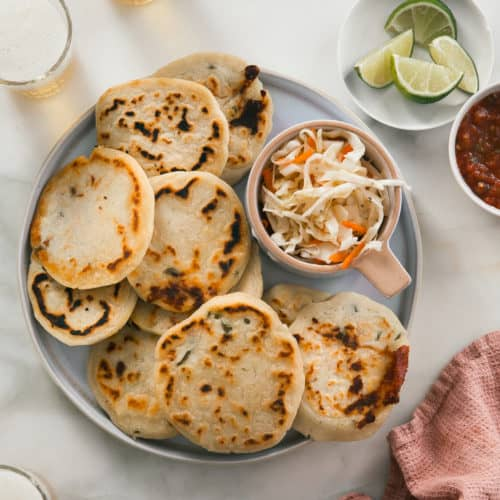

Pupusas with Curtido

Description
This is a step-by-step on how to make pupusas! This recipe hails from El Salvador and is made by mixing corn flour with water and salt.
It's topped with a quick pickled cabbage slaw called curtido.
Pupusas are El Salvadorian stuffed corn cakes served with curtido and salsa roja.
These pupusas with curtido are filled with melty cheese, pickled jalapeño and roasted squash,
but the filling options are endless!
Ingredients
Curtido:
- ½ head green cabbage, cored and shredded
- 1 small white onion, sliced
- 1 avacado, sliced
- 2 medium carrots, grated
- 4 cups boiling water
- 1 cup distilled white vinegar
- 1 tablespoon dried oregano
- 2 teaspoons kosher salt
Pupusa Dough
- 4 cups masa harina
- 2 teaspoons salt
- 3 cups cold water
Filling
- 1 can black beans, cooked(feel free to add whatever addtional fillings you would like)
- 1 tablespoon vegetable oil, for frying
Instructions
Making the Curtido:
- In a large bowl, combine the cabbage, onion, and carrots.
Pour the boiling water over the vegetables and toss. Let sit for 10 minutes, then drain.
- In a liquid measuring cup or small bowl, combine the vinegar, oregano, and salt. Pour over the slaw and toss to coat.
Once thoroughly mixed, transfer the curtido any any leftover liquid in the bowl to an airtight jar or container.
- Chill for at least 30 minutes in the refrigerator, or chill overnight for best results.
Pupusa Dough:
- In a large bowl, whisk together the masa harina and salt, then add the water.
Use your hands to mix until the dough comes together with a clay-like texture.
- Fill a small bowl with water and a bit of oil and set near your work station.
You’ll wet your fingers with the mixture as you work to keep the dough from sticking to your hands.
- Take a golf ball-sized portion of dough and roll into a ball, then flatten into an even round.
- Fill the dough rounds with 1 teaspoon refried beans. Fold the dough over the filling until it’s completely sealed.
Then, pat out the ball between your hands until flat. If the pupusa cracks, patch it with a bit of dough and a little oil.
- Heat a large pan or griddle over medium heat. Brush with vegetable oil, then place 2-3 pupusas on the pan and cook for 2-4 minutes,
or until the bottoms are golden brown. Flip and cook on the other side for 2-4 minutes more, until golden brown and warmed through. Repeat with the remaining pupusas.
- Serve the pupusas with a layer of avacado slices and curtido on top.
Go Back